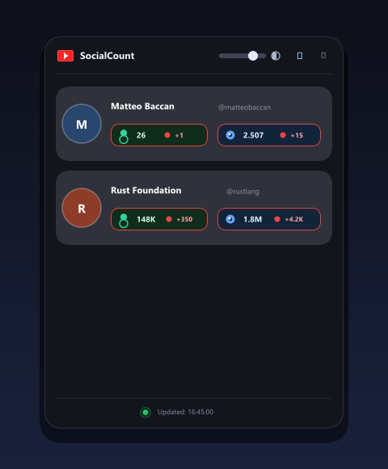
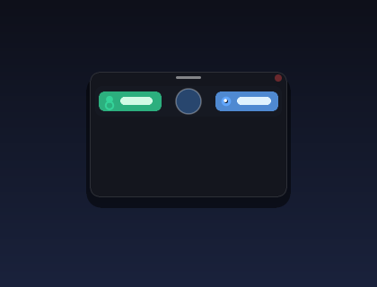

Real-Time YouTube Statistics
Floating on Your Desktop
A modern, transparent, always-on-top widget developed in Rust. Monitor subscriber counts and view numbers live with zero distraction and instant readability.
Dual Interface Modes
Switch instantly between detailed glassmorphism and minimalist ultra-compact views.
Full Glassmorphism Mode
Title, opacity slider, circular avatars, and dedicated counter pills
Ultra-Compact Mode (Double-Click)
Minimalist footprint: central circular avatar flanked by solid stat pills
Crafted for Performance & Elegance
Engineered in Rust with native Win32 coordinate sync, pure vector graphics, and zero external runtime dependencies.
Transparent & Frameless
Clean system chrome-free window with native transparency and soft ambient drop shadows that blends seamlessly onto any desktop wallpaper.
Always on Top
Floats effortlessly above all active full-screen windows during programming, video editing, streaming, or gaming sessions.
Solid Stat Counter Pills
Zero emojis. Crisp vector user silhouettes and eye icons with catchlight highlights. Always 100% opaque for maximum legibility at any transparency.
Continuous Opacity Slider
Smooth real-time opacity adjustment from 0% (fully transparent) to 100% (opaque). At 0% opacity, only avatars and stat pills float on screen.
Ultra-Compact Toggle
Double-click the title bar to collapse the widget into micro mode: headers and footers fade away, leaving only the circular channel icon and counters.
Anti-Ballooning Multi-Screen Drag
Win32 direct coordinate manipulation with SWP_NOSIZE prevents Aero Snap dockings and resizing glitches when dragged across multi-monitor setups with different DPIs.
Full CRUD Profile Manager
Right-click anywhere or click the settings header icon to add channels (auto-formatted with @), edit handles inline, reorder with up/down arrows, or remove profiles.
Real-Time Change Detection
Automatically pulses a distinct red border around subscriber or view count pills whenever numbers change between polling intervals.
1-Minute Smart Retry
If network hiccup or temporary rate limiting causes an unavailable stat (N/A / N/D), SocialCount retries automatically in 60s instead of waiting the full 5m cycle.
Simple TOML Configuration
Configured via channels.toml in the working directory. Changes can be made on the fly or through the in-app profile manager.
# SocialCount configuration file
# List of YouTube channels to monitor (handles with or without @)
channels = [
"@matteobaccan"
]
# Optional YouTube Data API v3 key (leave commented to use public scraping)
# youtube_api_key = "YOUR_YOUTUBE_DATA_API_KEY"
# Automatic refresh interval in seconds (default: 300 = 5 minutes)
refresh_interval_secs = 300
# Background opacity (0 = fully transparent, 255 = opaque, default: 190)
card_opacity = 190
# Compact mode (true = compact widget, false = full view)
compact_mode = false
# Window dimensions (width and height in logical pixels)
window_width = 360.0
window_height = 440.0Mouse & Keyboard Shortcuts
Intuitive gestures designed for rapid desktop control.
| Action | Trigger | Description |
|---|---|---|
| Move Window | Left Click + Drag on header | Smooth multi-screen positioning without Aero Snap snapping or DPI ballooning |
| Toggle Compact View | Double Click on title bar | Instantly shrink into micro widget or expand back to full view |
| Channel Manager (CRUD) | Right Click anywhere or Settings | Open modal to add, edit, reorder, or delete YouTube channels |
| Refresh Statistics | Click Refresh (⟳) | Immediately triggers background data fetch for all monitored channels |
| Resize Window | Drag bottom-right corner grip | Proportionally scales window dimensions and adapts counter pills |
| Open Channel | Left Click on avatar or title | Opens the YouTube channel directly in your default web browser |
| Close Widget | Click Close | Saves geometry, opacity, and compact state to channels.toml and quits |